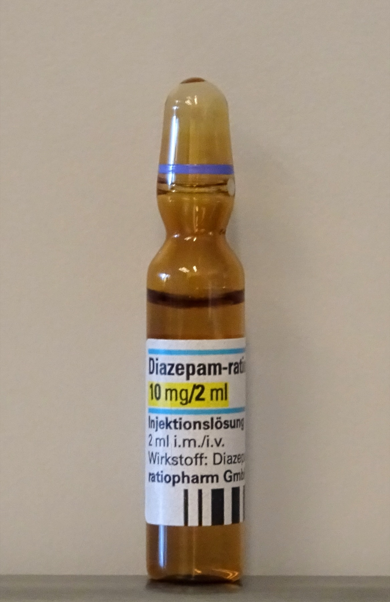

Erro comum desmontado · Pág. 06 de 20
AED deprime; o que falta no comprimido é adesão
O erro a desmontar
Muitos acham que a crise no epiléptico “tratado” é falha rara da droga. O primeiro vilão é outro: o paciente parou de tomar. Antes de trocar fármaco ou empilhar drogas, pergunte se o comprimido está entrando todos os dias.
O princípio terapêutico da epilepsia é o oposto da crise: a crise é excesso, o anticonvulsivante é depressão do SNC. Por isso o paciente “não fica confortável” tomando remédio todo dia — e por isso a adesão manda no desfecho.
AED = depressor do SNC
Princípio geral dos AEDs / anticonvulsivantes: diminuir o funcionamento neuronal → são depressores do SNC. Efeitos esperáveis: tontura, sonolência, diminuição cognitiva — o paciente “não fica confortável” tomando todo dia. Esse incômodo é parte do motivo da adesão falhar.
Regra de ouro · adesão = primeira causa de falha
O principal motivo de crise no epiléptico em uso de droga é não adesão (parou de tomar). Drogas neuropsiquiátricas: iniciar devagar e retirar devagar. Em “topo de dose” inadequado: some a crise e some o despertar (sedação excessiva).
Benzo na emergência (princípio)
Na emergência, o princípio é o grande sedativo para inibir o neurônio. Regra de ouro: o grande sedativo de emergência para crise é o benzodiazepínico.
Fronteira: vias, doses e o manejo completo do status pertencem ao eixo de manejo da crise em curso — aqui fica só o princípio. O marco operacional (>5 min) aparece na página da TCG.
Estimulantes disparam; álcool na abstinência
Drogas que causam crise: psicoestimulantes — cocaína, anfetamina. Álcool (depressor): a intoxicação em geral não tem crise como padrão; a abstinência sim gera. Raciocínio de prova: intoxicação + crise → preferir a droga estimuladora entre as alternativas.

Resumo operacional
AED deprime o SNC; adesão manda; emergência = benzo (princípio); estimulantes e abstinência alcoólica disparam.
Por que importa
Tratar a falha de adesão como “falha de droga” leva a politerapia inútil; tratar a crise do estimulante como abstinência leva ao diagnóstico errado.
Quiz
Conexão
Com o princípio terapêutico no bolso, a etiologia muda com a idade — e com ela a conduta e a imagem.